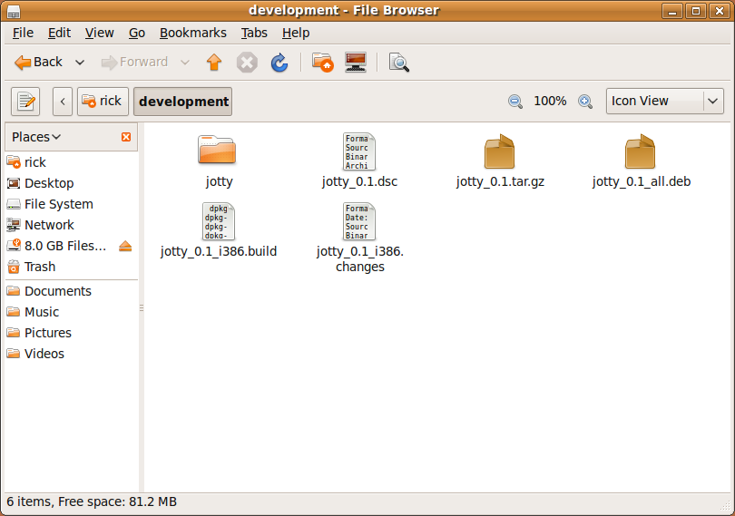
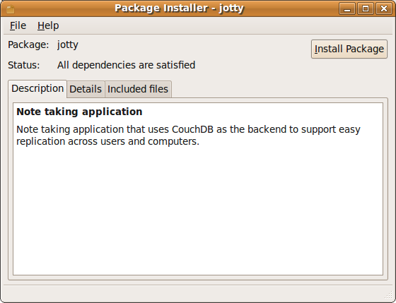
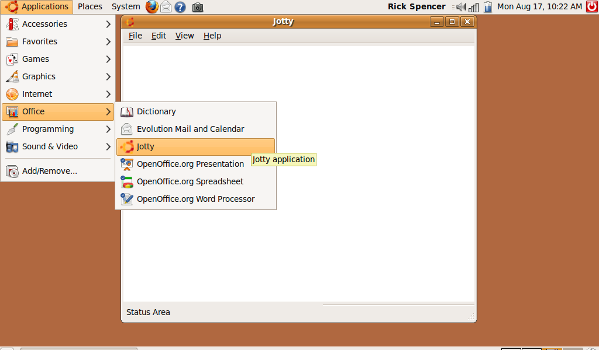

In parts 1 and 2, we showed how to create a simple Ubuntu application using Quickly. This section will cover how to package an application so that it is easy for you to share, and easy for other people to install.
It's important to license your code so users and other programmers know their rights in terms of redistributing or modifying it. To quickly grant a GPL license to your code, simply:
When Quickly created your Ubuntu project, it added a file named Copyright in the top level of the directory. Open this file in your text editor, and modify the top line so it has your name and email included. Be sure not to modify other lines as it will interfere with the next step. For exmaple, I would change the entire file to look like this:
By default, Quickly will use a GPL 3 license for your project. To use this license, use this command:
This will add the GPL 3 license to all of your code files that you've added to your project using Quickly.Keep in mind a couple of things:
You should personalize your applicaton a little before creating the archive. This is very easy to do, as all of the files that you need have already been created, and only need a few lines changed to make them your own. To do this you should:
When users install your application, Ubuntu will display an icon next to it in the menus. You can create your own icon or edit the file called "icon.png" in the media directory (jotty/data/media). Ubuntu comes with a great image editing program called "Gimp." So you can go:

If you don't personalize the icon, it's ok, your app will just have the default icon, such as in the image below.
By defualt, Quickly Ubuntu-Project applications are classified as "utilities", so they show up under the Accessories menu in Ubuntu. If we wanted to make Jotty show up in another category, we can do this by editing the desktop file. A desktop file is a file that describes your application to a Linux desktop. The file "jottydesktop.in" was automatically created in the jotty project directory. To change Jotty from a Utility to an Office application, edit jotty.desktop.in and change this:
to this:
There are lots more categories that you can use, all defined by the FreeDesktop spec. You can see the complete list in the menu spec.
Finally, you should include some informatoin in the setup.py file to tell your users a little about yourself. The setup.py file was created for you, just like the desktop file. Most of of the setup.py file shouldn't be modified, as it is just boiler plate that makes your application work properly after it has been installed. However, there is a section at the bottom of the setup.py file that you should edit to describe yourself and the application.
So I would change this section:
To look like this:
Notice that Jotty doesn't have a web page yet, so I just left that line commented out. Also, if you enhance the application and want to repackage it, you should make sure to increment version so that it will properly update itself for your users who have installed the first version.
After personalizing the project, we are now ready to create the package. This is easily done by issueing the package command:
This command will take a little while to discover dependencies and create all the required archives, etc... It will also report some errors as we haven't created a PGP key, for instance. None the less, when it is done, the package will be created. Using the file browser, you can see the created package next to the project directory:
Right now, the specific file we are interested in is "jotty_0.1_all.deb". To test it out, double click on it, to open it in Ubuntu's graphical installer program:
Click "Install Package" to see how it installs onto your desktop. After chugging for a bit, you'll see that it is installed in the Applications->Office menu. If you customized your icon, you'll see that the menu uses your custom icon as well.
Now that you've packaged your application, you can share the .deb file. However, if your users install their application this way, and you update the appliation, your users will have to find this out and resinstall. This hassle can be avoided in Ubuntu by using Personal Package Archives (or PPAs). Distrubuting your applications in this manner is covered in section 4.